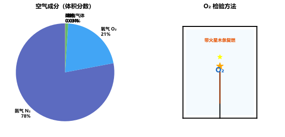
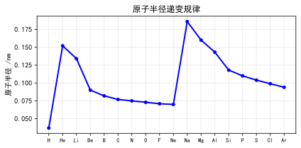
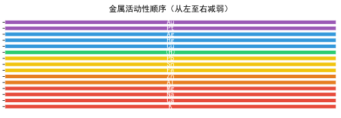
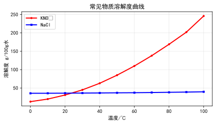
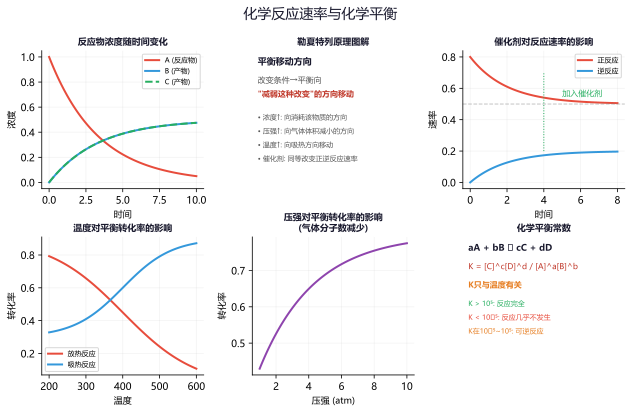

🧪 初中化学常考模型
物质分类 · 化学用语 · 金属与溶液 · 推断 · 实验 · 计算 · 中考全覆盖
一、物质分类与性质模型
🔹 物质分类模型
纯净物与混合物：
混合物 空气、溶液、合金、矿泉水
纯净物 由一种物质组成
纯净物细分：单质 金属（Fe、Cu）、非金属（O₂、C）、稀有气体（He、Ne） 化合物 氧化物（CO₂、H₂O）、酸（HCl、H₂SO₄）、碱（NaOH、Ca(OH)₂）、盐（NaCl、Na₂CO₃）
混合物 空气、溶液、合金、矿泉水
纯净物 由一种物质组成
纯净物细分：单质 金属（Fe、Cu）、非金属（O₂、C）、稀有气体（He、Ne） 化合物 氧化物（CO₂、H₂O）、酸（HCl、H₂SO₄）、碱（NaOH、Ca(OH)₂）、盐（NaCl、Na₂CO₃）

🔹 物质变化模型
物理变化 没有新物质生成：破碎、挥发、熔化、蒸发、吸附、蒸馏、分离液态空气
化学变化 有新物质生成：燃烧、生锈、发酵、腐烂、光合作用、呼吸作用
判断依据 是否有新物质生成（不是看是否有现象！）
常考易错：干冰升华（物理），食物变质（化学），电灯发光（物理），火药爆炸（化学）
物理性质：色味态、熔沸点、密度、溶解性、导电导热性（不需化学变化就能表现出来的性质）
化学变化 有新物质生成：燃烧、生锈、发酵、腐烂、光合作用、呼吸作用
判断依据 是否有新物质生成（不是看是否有现象！）
常考易错：干冰升华（物理），食物变质（化学），电灯发光（物理），火药爆炸（化学）
物理性质：色味态、熔沸点、密度、溶解性、导电导热性（不需化学变化就能表现出来的性质）
化学变化中常伴随：放热发光、变色、生成气体、生成沉淀
例题 1：下列变化属于化学变化的是（ ）
A. 瓷碗破碎 B. 冰雪融化 C. 纸张燃烧 D. 汽油挥发
分析：C。纸张燃烧生成了二氧化碳和水等新物质，属于化学变化。A、B、D均没有新物质生成。
A. 瓷碗破碎 B. 冰雪融化 C. 纸张燃烧 D. 汽油挥发
分析：C。纸张燃烧生成了二氧化碳和水等新物质，属于化学变化。A、B、D均没有新物质生成。
判断化学变化的唯一依据是"是否有新物质生成"。注意：有发光发热现象的不一定是化学变化（如电灯发光发热是物理变化）。
例题 2：以下属于纯净物的是（ ），属于混合物的是（ ）
A. 冰水混合物 B. 洁净的空气 C. 液氧 D. 稀有气体
分析：纯净物：A（冰和水都是H₂O）、C（液氧是O₂）。混合物：B（含N₂、O₂、CO₂等）、D（含He、Ne、Ar等）。
A. 冰水混合物 B. 洁净的空气 C. 液氧 D. 稀有气体
分析：纯净物：A（冰和水都是H₂O）、C（液氧是O₂）。混合物：B（含N₂、O₂、CO₂等）、D（含He、Ne、Ar等）。
易错点："洁净的空气"≠纯净物，空气是混合物。"冰水混合物"是纯净物，因为冰和水是同种物质的不同状态。
练习 1：判断下列物质属于纯净物还是混合物：①矿泉水 ②蒸馏水 ③食醋 ④干冰
纯净物：②蒸馏水（H₂O）、④干冰（CO₂）。混合物：①矿泉水（含水+矿物质）、③食醋（含醋酸+水等）。
练习 2：下列描述属于物理性质的是（ ） A.木炭能燃烧 B.铁在潮湿空气中生锈 C.氧气不易溶于水 D.石灰石遇盐酸冒气泡
C。A、B、D都需要通过化学变化才能表现出来，属于化学性质。C中的溶解性属于物理性质。
二、化学用语模型
🔹 化合价与化学式
化合价口诀：一价K Na Cl H Ag，二价O Ca Ba Mg Zn，三Al四Si五价P，二三Fe、二四C，二四六S都齐全，Cu Hg二价最常见。
化学式书写：正价左、负价右，交叉约简。
+1价+ −1价 → NaCl +3价+ −2价 → Fe₂O₃ +2价+ −1价 → Ca(OH)₂ +1价+ −2价 → Na₂CO₃
化学式书写：正价左、负价右，交叉约简。
+1价+ −1价 → NaCl +3价+ −2价 → Fe₂O₃ +2价+ −1价 → Ca(OH)₂ +1价+ −2价 → Na₂CO₃

🔹 化学方程式
书写四步：写（反应物→生成物）→配（最小公倍数法/观察法）→标（↑↓条件）→查（原子守恒）
常见条件：点燃 高温 △ MnO₂ 通电 催化剂
↑的使用：反应物无气体，生成物有气体
↓的使用：溶液中反应，生成沉淀
反应类型： 化合 A+B→AB 分解 AB→A+B 置换 A+BC→AC+B 复分解 AB+CD→AD+CB
常见条件：点燃 高温 △ MnO₂ 通电 催化剂
↑的使用：反应物无气体，生成物有气体
↓的使用：溶液中反应，生成沉淀
反应类型： 化合 A+B→AB 分解 AB→A+B 置换 A+BC→AC+B 复分解 AB+CD→AD+CB
质量守恒定律：化学反应前后，原子种类、数目、质量均不变
例题 3：写出下列物质的化学式：①氯化铁 ②硫酸铜 ③硝酸铵 ④氢氧化钙
分析：①FeCl₃（铁+3价，氯−1价）②CuSO₄（铜+2价，硫酸根−2价）③NH₄NO₃（铵根+1价，硝酸根−1价）④Ca(OH)₂（钙+2价，氢氧根−1价）
分析：①FeCl₃（铁+3价，氯−1价）②CuSO₄（铜+2价，硫酸根−2价）③NH₄NO₃（铵根+1价，硝酸根−1价）④Ca(OH)₂（钙+2价，氢氧根−1价）
注意：氯化铁的"铁"是+3价（FeCl₃），氯化亚铁才是+2价（FeCl₂）。硝酸铵中两个氮原子化合价不同：NH₄⁺中N为−3价，NO₃⁻中N为+5价。
例题 4：配平化学方程式：Fe₂O₃ + CO → Fe + CO₂
解：Fe₂O₃ + 3CO → 2Fe + 3CO₂
（观察法：每个CO得到一个O变成CO₂，Fe₂O₃中有3个O，需要3个CO）
解：Fe₂O₃ + 3CO → 2Fe + 3CO₂
（观察法：每个CO得到一个O变成CO₂，Fe₂O₃中有3个O，需要3个CO）
配平技巧：先配变价元素，再配其他。本题中Fe从+3→0（得3e⁻），C从+2→+4（失2e⁻），最小公倍数为6，Fe₂O₃系数1→Fe系数2，CO系数3→CO₂系数3。
练习 3：写出镁在氧气中燃烧、铁与硫酸铜溶液反应的化学方程式并注明反应类型。
①2Mg+O₂→2MgO（化合反应，条件：点燃）②Fe+CuSO₄→FeSO₄+Cu（置换反应）
练习 4：配平：C₂H₅OH + O₂ → CO₂ + H₂O
C₂H₅OH + 3O₂ → 2CO₂ + 3H₂O（条件：点燃）。设C₂H₅OH系数为1，则C→2CO₂，H→3H₂O，最后配O。
三、金属与溶液模型
🔹 金属活动性模型
金属活动性顺序：
K Ca Na Mg Al Zn Fe Sn Pb (H) Cu Hg Ag Pt Au
→ 活动性逐渐减弱
应用：
1. 排H前金属与酸反应产生H₂（Fe+H₂SO₄→FeSO₄+H₂↑）
2. 排前金属能把排后金属从盐溶液中置换出来（Fe+CuSO₄→FeSO₄+Cu）
验证三种金属活动性方法：
方法一：中间金属 + 两边金属盐溶液
方法二：两边金属 + 中间金属盐溶液
K Ca Na Mg Al Zn Fe Sn Pb (H) Cu Hg Ag Pt Au
→ 活动性逐渐减弱
应用：
1. 排H前金属与酸反应产生H₂（Fe+H₂SO₄→FeSO₄+H₂↑）
2. 排前金属能把排后金属从盐溶液中置换出来（Fe+CuSO₄→FeSO₄+Cu）
验证三种金属活动性方法：
方法一：中间金属 + 两边金属盐溶液
方法二：两边金属 + 中间金属盐溶液

| 金属 | 与酸反应 | 与O₂反应 | 与盐溶液 |
|---|---|---|---|
| Mg | 剧烈，大量气泡 | 剧烈燃烧，白光 | 能置换出大部分金属 |
| Al | 较快，气泡 | 剧烈燃烧 | 能置换 |
| Zn | 适中，气泡 | — | 能置换 |
| Fe | 缓慢，气泡 | 火星四射 | 能置换Cu、Ag等 |
| Cu | 不反应 | 加热变黑 | 与AgNO₃反应 |
| Ag | 不反应 | 不反应 | 不反应 |
🔹 溶液模型
溶液组成：溶质（被溶解）+ 溶剂（水最常见）
溶解度的四要素：一定温度 + 100g溶剂 + 饱和状态 + 溶解质量（g）
溶解度曲线三类型： 陡升型(KNO₃) 适合降温结晶 缓升型(NaCl) 适合蒸发结晶 下降型(Ca(OH)₂) 温度升高溶解度减小
结晶方法选择：提纯KNO₃（含少量NaCl）→降温结晶；提纯NaCl（含少量KNO₃）→蒸发结晶
溶质质量分数：ω = m溶质/m溶液 × 100% 稀释：浓×浓% = 稀×稀%（溶质守恒）
溶解度的四要素：一定温度 + 100g溶剂 + 饱和状态 + 溶解质量（g）
溶解度曲线三类型： 陡升型(KNO₃) 适合降温结晶 缓升型(NaCl) 适合蒸发结晶 下降型(Ca(OH)₂) 温度升高溶解度减小
结晶方法选择：提纯KNO₃（含少量NaCl）→降温结晶；提纯NaCl（含少量KNO₃）→蒸发结晶
溶质质量分数：ω = m溶质/m溶液 × 100% 稀释：浓×浓% = 稀×稀%（溶质守恒）

ω = (m溶质 / m溶液) × 100% | 稀释前后溶质质量不变
例题 5：将一定质量的锌粉加入含有Cu(NO₃)₂和AgNO₃的混合溶液中，充分反应后过滤。若滤液呈蓝色，则滤渣中一定含有____，可能含有____。
分析：金属活动性：Zn > Cu > Ag。Zn先置换Ag，再置换Cu。滤液蓝色→有Cu²⁺，说明Cu未被完全置换→滤渣一定含Ag，可能含Cu，一定不含Zn。
分析：金属活动性：Zn > Cu > Ag。Zn先置换Ag，再置换Cu。滤液蓝色→有Cu²⁺，说明Cu未被完全置换→滤渣一定含Ag，可能含Cu，一定不含Zn。
金属活动性顺序应用：排前的金属先置换排后的金属。Zn→AgNO₃→Cu(NO₃)₂，顺序不可颠倒。滤液蓝色说明还有Cu²⁺，所以Cu未被完全置换，Zn已反应完。
例题 6：20℃时，NaCl的溶解度为36g。将40g NaCl加入100g水中，充分溶解后所得溶液的溶质质量分数是多少？
解：溶解度36g→100g水中最多溶解36g NaCl。40g未全溶，剩余4g。m溶质=36g，m溶液=100+36=136g，ω=36/136×100%≈26.5%
解：溶解度36g→100g水中最多溶解36g NaCl。40g未全溶，剩余4g。m溶质=36g，m溶液=100+36=136g，ω=36/136×100%≈26.5%
注意：未溶解的固体不算溶质！ω=溶解度/(100+溶解度)×100%仅适用于饱和溶液。本题中溶质是36g不是40g。
练习 5：将铁钉放入CuSO₄溶液中，一段时间后观察到的现象是什么？写出化学方程式。
铁钉表面有红色固体析出，溶液由蓝色变成浅绿色。Fe+CuSO₄→FeSO₄+Cu（置换反应）
练习 6：将20g 10%的NaCl溶液稀释为5%的溶液，需加水的质量是多少？
稀释前后溶质质量不变：20×10%=2g。5%→m溶液=2/5%=40g，需加水=40−20=20g。
四、推断题模型
🔹 推断题突破口——特征颜色
红色 Cu（紫红）、Fe₂O₃（红棕）、红磷、Cu₂O
黑色 C、CuO、Fe₃O₄、MnO₂、Fe粉
蓝色 CuSO₄·5H₂O晶体、Cu(OH)₂沉淀、CuSO₄溶液 黄色 FeCl₃溶液、硫
绿色 Cu₂(OH)₂CO₃（铜绿）、FeSO₄溶液（浅绿）
白色沉淀 BaSO₄、AgCl（不溶于稀硝酸）；CaCO₃、BaCO₃（溶于酸有气泡）
蓝色 CuSO₄·5H₂O晶体、Cu(OH)₂沉淀、CuSO₄溶液 黄色 FeCl₃溶液、硫
绿色 Cu₂(OH)₂CO₃（铜绿）、FeSO₄溶液（浅绿）
白色沉淀 BaSO₄、AgCl（不溶于稀硝酸）；CaCO₃、BaCO₃（溶于酸有气泡）
🔹 常见三角转化关系
钙三角：CaO →(H₂O) Ca(OH)₂ →(CO₂) CaCO₃ →(高温) CaO
碳三角：C →(O₂不足) CO →(O₂) CO₂ →(C,高温) CO
铜三角：Cu →(O₂,△) CuO →(H₂SO₄) CuSO₄ →(Fe) Cu
氧三角：H₂O₂ →(MnO₂) H₂O+O₂ H₂O →(通电) H₂+O₂ H₂+O₂ →(点燃) H₂O
常考转化关系：
CO₂⇄H₂CO₃（CO₂通入紫色石蕊变红，加热又变紫）
Fe₂O₃ → Fe → Fe₃O₄（炼铁/铁在O₂中燃烧）
碳三角：C →(O₂不足) CO →(O₂) CO₂ →(C,高温) CO
铜三角：Cu →(O₂,△) CuO →(H₂SO₄) CuSO₄ →(Fe) Cu
氧三角：H₂O₂ →(MnO₂) H₂O+O₂ H₂O →(通电) H₂+O₂ H₂+O₂ →(点燃) H₂O
常考转化关系：
CO₂⇄H₂CO₃（CO₂通入紫色石蕊变红，加热又变紫）
Fe₂O₃ → Fe → Fe₃O₄（炼铁/铁在O₂中燃烧）
🔹 工业流程推断模型
流程题解题思路：
①读题干：明确原料和目标产物
②看箭头：箭头指向→物质流向
③找操作：过滤（固液分离）、蒸发结晶、降温结晶等
④写方程：每一步的化学反应
关键 关注"循环利用"的物质（降低成本）和"尾气处理"
①读题干：明确原料和目标产物
②看箭头：箭头指向→物质流向
③找操作：过滤（固液分离）、蒸发结晶、降温结晶等
④写方程：每一步的化学反应
关键 关注"循环利用"的物质（降低成本）和"尾气处理"

例题 7：A~G是初中常见物质，A是黑色固体，B是红棕色固体。已知：A+B→Fe+CO₂。推断A、B、C、D是什么？
分析：A黑色→可能是C、CuO、Fe₃O₄等；B红棕色→Fe₂O₃。A+B→Fe+CO₂是炼铁原理：Fe₂O₃+3CO→2Fe+3CO₂，所以A是Fe₂O₃，但前面说A是黑色→不对。
再思考：C+Fe₂O₃→Fe+CO₂，A是C（黑色），C+Fe₂O₃→Fe+CO₂。所以：A=C，B=Fe₂O₃。
分析：A黑色→可能是C、CuO、Fe₃O₄等；B红棕色→Fe₂O₃。A+B→Fe+CO₂是炼铁原理：Fe₂O₃+3CO→2Fe+3CO₂，所以A是Fe₂O₃，但前面说A是黑色→不对。
再思考：C+Fe₂O₃→Fe+CO₂，A是C（黑色），C+Fe₂O₃→Fe+CO₂。所以：A=C，B=Fe₂O₃。
推断题突破口总结：看到"黑色固体"优先考虑C、CuO、Fe₃O₄、MnO₂、Fe粉；看到"红棕色"→Fe₂O₃；看到"紫红色"→Cu。
例题 8：已知A为石灰石主要成分，B为常见氧化物。A→(高温) B+C↑，B+H₂O→D，D+CO₂→E↓+H₂O。推断A~E的化学式。
分析：A是CaCO₃（石灰石），高温分解：CaCO₃→CaO+CO₂↑，所以B=CaO，C=CO₂。CaO+H₂O→Ca(OH)₂（D），Ca(OH)₂+CO₂→CaCO₃↓+H₂O（E=CaCO₃）。
分析：A是CaCO₃（石灰石），高温分解：CaCO₃→CaO+CO₂↑，所以B=CaO，C=CO₂。CaO+H₂O→Ca(OH)₂（D），Ca(OH)₂+CO₂→CaCO₃↓+H₂O（E=CaCO₃）。
这是典型的"钙三角"模型题。A=CaCO₃，B=CaO，C=CO₂，D=Ca(OH)₂，E=CaCO₃。注意E和A是同一物质，体现碳的循环。
练习 7：X是常见金属氧化物，与稀硫酸反应得到蓝色溶液Y，Y中加入铁粉得到红色固体Z。推断X、Y、Z的化学式。
蓝色溶液→含Cu²⁺。X=CuO（黑色），CuO+H₂SO₄→CuSO₄+H₂O（Y蓝色），Fe+CuSO₄→FeSO₄+Cu（Z红色）。所以X=CuO，Y=CuSO₄，Z=Cu。
练习 8：一种无色气体A通过灼热的黑色固体B后转化为无色气体C，C通入澄清石灰水变浑浊。写出A、B、C的化学式。
C使澄清石灰水变浑浊→CO₂。A无色→可能CO或O₂等。若A=CO（无色），B=CuO（黑色），则CO+CuO→Cu+CO₂。所以A=CO，B=CuO，C=CO₂。
五、实验操作模型
🔹 气体制取与净化
发生装置选择：
收集方法：
排水法 难溶/微溶于水（O₂、H₂）
向上排空气 密度大于空气（O₂、CO₂）
向下排空气 密度小于空气（H₂）
净化顺序：先除杂后干燥。除杂液（NaOH除CO₂、浓H₂SO₄干燥、澄清石灰水检验CO₂）
| 类型 | 适用 | 实例 |
|---|---|---|
| 固固加热型 | 反应物固体+加热 | KMnO₄制O₂ |
| 固液常温型 | 固体+液体不加热 | H₂O₂制O₂、制CO₂、制H₂ |
净化顺序：先除杂后干燥。除杂液（NaOH除CO₂、浓H₂SO₄干燥、澄清石灰水检验CO₂）

KMnO₄制O₂七步：查→装→定→点→收→离→熄（茶庄定点收利息）
🔹 物质鉴别与除杂
常见物质鉴别：
O₂ 带火星木条复燃 CO₂ 澄清石灰水变浑浊 H₂ 点燃淡蓝色火焰，产物只有水 CO 点燃蓝色火焰，产物使澄清石灰水变浑
H₂O 无水CuSO₄变蓝 酸(H⁺) 紫色石蕊变红 碱(OH⁻) 紫色石蕊变蓝/无色酚酞变红
除杂原则：不增、不减、易分离
例：CO中混CO₂ → 通过NaOH溶液 例：CaO中混CaCO₃ → 高温煅烧
O₂ 带火星木条复燃 CO₂ 澄清石灰水变浑浊 H₂ 点燃淡蓝色火焰，产物只有水 CO 点燃蓝色火焰，产物使澄清石灰水变浑
H₂O 无水CuSO₄变蓝 酸(H⁺) 紫色石蕊变红 碱(OH⁻) 紫色石蕊变蓝/无色酚酞变红
除杂原则：不增、不减、易分离
例：CO中混CO₂ → 通过NaOH溶液 例：CaO中混CaCO₃ → 高温煅烧

例题 9：实验室用KMnO₄制取O₂时，试管口为什么要放一团棉花？实验结束时为什么要先撤导管后熄灭酒精灯？
分析：①棉花防止KMnO₄粉末进入导管堵塞导管；②先撤导管后熄灯防止水倒吸炸裂试管。
分析：①棉花防止KMnO₄粉末进入导管堵塞导管；②先撤导管后熄灯防止水倒吸炸裂试管。
两个常考操作原因：①棉花作用：KMnO₄粉末随气流进入导管 → 堵塞导管，影响气体导出。②"先移后熄"：停止加热后试管内温度降低、压强减小，水槽水倒吸入试管导致试管炸裂。
例题 10：如何鉴别三瓶无色气体：空气、O₂、CO₂？
方案：用燃着的木条分别伸入三瓶气体中：木条燃烧更旺→O₂；木条熄灭→CO₂；木条正常燃烧→空气。
方案：用燃着的木条分别伸入三瓶气体中：木条燃烧更旺→O₂；木条熄灭→CO₂；木条正常燃烧→空气。
注意：不能用"澄清石灰水"一次性鉴别三者（石灰水只能鉴别CO₂，无法区分空气和O₂）。用带火星的木条也不合适（空气中的木条不会复燃但也不熄灭）。最合适的是燃着的木条。
练习 9：除去CO₂中混有的少量CO，应采用什么方法？写出相关化学方程式。
将混合气体通过灼热的CuO。CO+CuO→(△)Cu+CO₂。注意不可用点燃的方法（CO₂不支持燃烧，少量CO无法点燃）。
练习 10：实验室制取CO₂不能用稀硫酸代替稀盐酸，为什么？
CaCO₃+H₂SO₄→CaSO₄+H₂O+CO₂↑。生成的CaSO₄微溶于水，会覆盖在石灰石表面阻止反应进一步进行，导致反应很快停止。
六、计算题模型
🔹 中考计算五大模型
模型一：化学方程式计算 — 设→写→列→比→求→答（代纯物质质量进方程）
模型二：含杂质计算 — 纯物质 = 不纯物 × 纯度 → 计算结果 ÷ 纯度
模型三：质量守恒法 — 生成气体/沉淀质量 = 反应前总质量 − 反应后剩余质量
模型四：溶质质量分数 — ω = m溶质/m溶液×100%，反应后溶液 = 反应前总质量 − 气体 − 沉淀
模型五：图像/表格题 — 找拐点（恰好完全反应的点），用该点数据计算
模型二：含杂质计算 — 纯物质 = 不纯物 × 纯度 → 计算结果 ÷ 纯度
模型三：质量守恒法 — 生成气体/沉淀质量 = 反应前总质量 − 反应后剩余质量
模型四：溶质质量分数 — ω = m溶质/m溶液×100%，反应后溶液 = 反应前总质量 − 气体 − 沉淀
模型五：图像/表格题 — 找拐点（恰好完全反应的点），用该点数据计算

质量守恒：m前 = m后 + m↑ + m↓ | 代入方程的都是纯物质质量
🔹 酸碱盐网络模型
酸的五条化学性质：①使指示剂变色 ②与活泼金属→盐+H₂↑ ③与金属氧化物→盐+H₂O ④与碱中和→盐+H₂O ⑤与某些盐→新盐+新酸
碱的四条化学性质：①使指示剂变色 ②与某些非金属氧化物→盐+H₂O ③与酸中和 ④与某些盐→新盐+新碱
盐的四条化学性质：①与金属反应（排前换排后）②与酸反应 ③与碱反应 ④与盐反应
复分解反应发生条件：生成物中有沉淀、气体或水（三者至少一个）
口诀："复分解，两头顾，产物有沉淀气体或水就搞定"
碱的四条化学性质：①使指示剂变色 ②与某些非金属氧化物→盐+H₂O ③与酸中和 ④与某些盐→新盐+新碱
盐的四条化学性质：①与金属反应（排前换排后）②与酸反应 ③与碱反应 ④与盐反应
复分解反应发生条件：生成物中有沉淀、气体或水（三者至少一个）
口诀："复分解，两头顾，产物有沉淀气体或水就搞定"
中和反应：酸+碱→盐+H₂O | 实质：H⁺+OH⁻→H₂O
例题 11：实验室用10g CaCO₃与足量稀盐酸反应，求生成CO₂的质量。（相对原子质量：Ca-40，C-12，O-16）
解：CaCO₃+2HCl→CaCl₂+H₂O+CO₂↑
CaCO₃式量=100，CO₂式量=44。设生成CO₂质量为x：100/10=44/x → x=10×44/100=4.4g
解：CaCO₃+2HCl→CaCl₂+H₂O+CO₂↑
CaCO₃式量=100，CO₂式量=44。设生成CO₂质量为x：100/10=44/x → x=10×44/100=4.4g
解题步骤：①写方程式 ②找已知和未知 ③列比例式 ④计算 ⑤作答。关键：代入方程式的必须是纯物质质量（本题CaCO₃是纯的）。
例题 12：取25g含CaCO₃ 80%的石灰石与足量稀盐酸反应，求生成CO₂的质量。
解：纯CaCO₃质量=25×80%=20g。设生成CO₂质量为x：CaCO₃+2HCl→CaCl₂+H₂O+CO₂↑，100/20=44/x → x=20×44/100=8.8g
解：纯CaCO₃质量=25×80%=20g。设生成CO₂质量为x：CaCO₃+2HCl→CaCl₂+H₂O+CO₂↑，100/20=44/x → x=20×44/100=8.8g
含杂质计算的关键：先把不纯物质量换算为纯物质质量，再代入化学方程式计算。纯物质 = 不纯物 × 纯度（质量分数）。
例题 13：向100g NaOH溶液中滴加稀盐酸至恰好完全反应，消耗稀盐酸73g。反应后溶液质量为173g，测得NaCl质量为11.7g。计算NaOH溶液的溶质质量分数。
解：NaOH+HCl→NaCl+H₂O。设NaOH质量为x：40/x=58.5/11.7 → x=8g。ω=8/100×100%=8%
解：NaOH+HCl→NaCl+H₂O。设NaOH质量为x：40/x=58.5/11.7 → x=8g。ω=8/100×100%=8%
本题验证质量守恒：反应前总质量=100+73=173g=反应后质量，符合质量守恒。也可以用质量守恒法求生成物质量。
练习 11：实验室用6.5g锌粒与足量稀硫酸反应，求生成H₂的质量和体积（标准状况下H₂密度为0.09g/L）。
Zn+H₂SO₄→ZnSO₄+H₂↑。Zn式量=65，65/6.5=2/x → x=0.2g。V=m/ρ=0.2/0.09≈2.22L
练习 12：将10g铁粉加入足量CuSO₄溶液中，反应后过滤、洗涤、干燥，得到固体质量10.8g。求参加反应的铁的质量。
Fe+CuSO₄→FeSO₄+Cu，固体质量差：每56g Fe反应析出64g Cu，增重8g。实际增重10.8−10=0.8g，所以参加反应的Fe质量=56×0.8/8=5.6g（差量法）